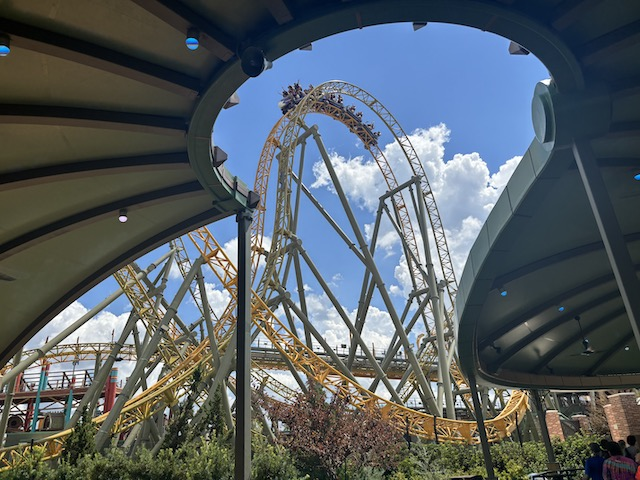
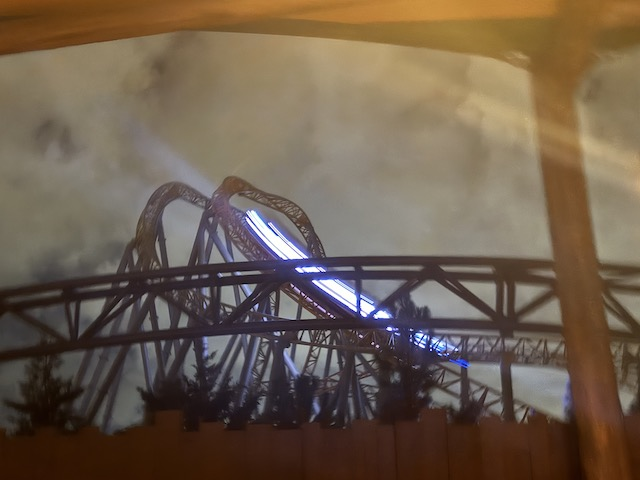
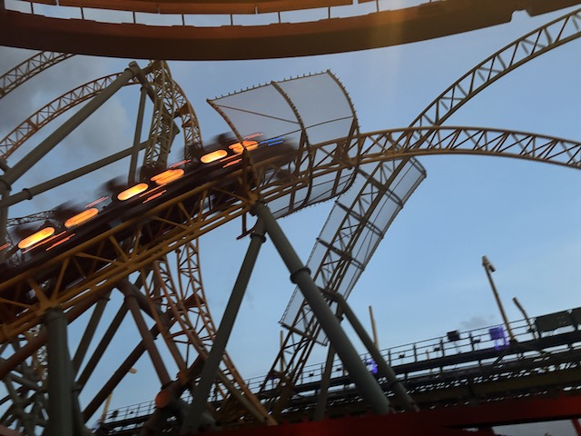
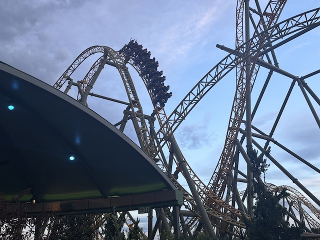
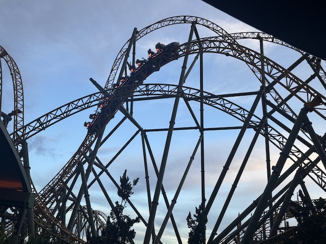
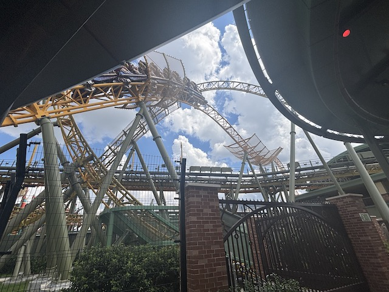
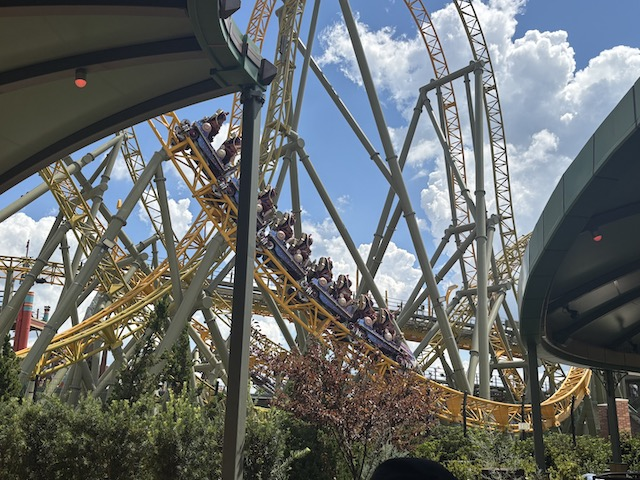
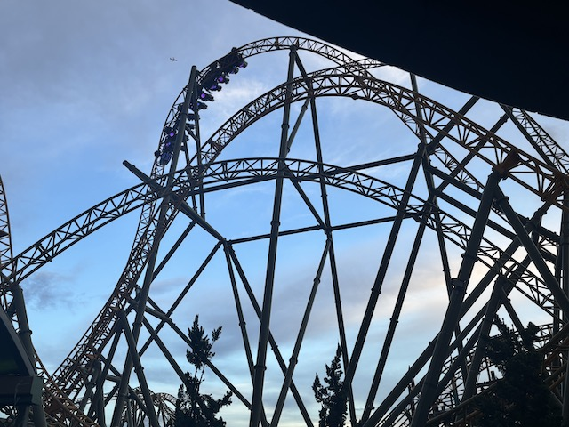
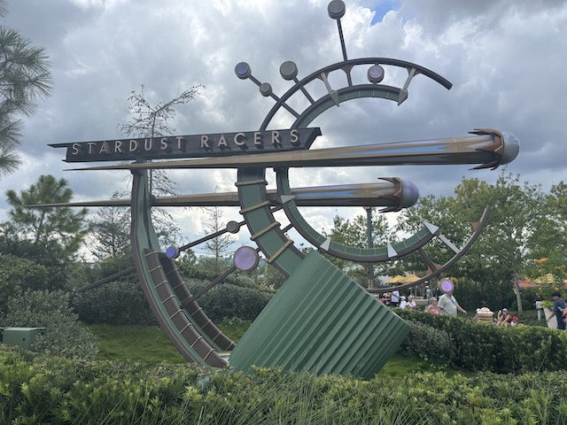
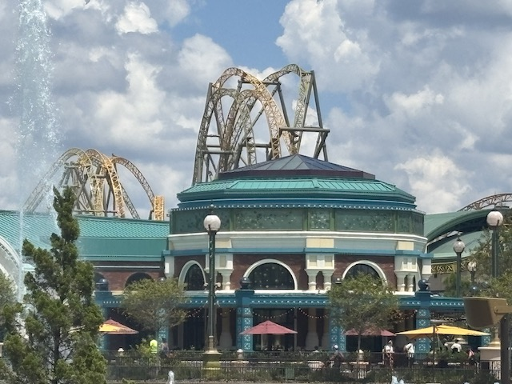

| |
Stardust Racers Review

Today, we'll be reviewing Stardust Racers. This is a custom made coaster by Mack built specifically for the brand new park, Epic Universe. And....it's one of their launched coasters. Except this one not only races, but is the best of its kind (Sorry Helix, but you lost that title). And yeah. This ride is AMAZING!!! Now sadly, this ride wasn't racing when I went. In fact, only the Yellow side (Photon) was open wgen I went. So I guess some enthusiasts would say I've technically only ridden half of Stardust Racers. But oh well. Anyways, we hop in the super comfy seats, pull down the lap bar, and away we go! We roll through an S bend out of the station, which also sort of fuctions as a downward helix. This gives a nice little bit of speed. We then head into a tunnel where we meet the other track (Bummer there was no other train for me to race, but at least I got on this at all), but that little bit of speed is goba turn into A LOT of speed as we hit the first launch. And.....this is a pretty good one! Sure, there may be stronger launches out there! But this is pretty good. PLus, it has some cool lights in there, giving the illusion of launching into outer space. Thats pretty cool. And keep in mind that this is bad theming by Epic Universe standards, which just goes to show how amazing the rest of the park is. Anywaysm we pop out of the park and into a giant airtime hill. Which....DAMN!!! STRONG EJECTOR AIR!!! HELL YES!!! Sure, it's not violently strong, but it still is really smootgh solid ejector air! We heasd up another huge hill, and BAM!!! MORE EJECTOR AIR!!! But going down, we head into a curved drop, giving us some laterals on top of our speed! Yeah. I'm really loving this ride! =) And of course, head straight into another hill of ejector air!!! AWESOME!!! I know that this meant to be a dueling moment. Man, wish the other side was running so I could've waved at them (or shouted at them like an overcompetitive jackass). But this ride is still amazing regardless. We go through another dueling moment before rising up and going through an elevated series of bunny hops. And YES!!! An ejector air buffet! Ass rises out of seat! Ass falls back into seat! Rinse and repeat 4 times! After the fourth bunny hop we go through a big swooping drop towards the ground, and rising up into another curved hill, passing by the other side (and where the other side would be). We head down another curved drop before we come to my personal favorite part of the ride. The 2nd launch. Or rather, the 2nd and 3rd launch tecgnically. You see, this isn't really an ordinary launch. No, what this is is....basically two launches back to back. Which may sound weird, but......honestly, really is thew best. See, you launch, gain some speed. But just as you slightly start to lose speed, BAM!!! You are launched AGAIN to EVEN HIGHER SPEEDS!!! What makes this so cool is....you know that kick you get whenever you are launched. You basically get that twice in a row here. And with a pretty strong launch, that double kick not only catches you off guard, but that 2nd kick in partticular just puts a HUGE smile on your face. WE then head up into another giant.....what's this? Yeah. This isn't an airtime hill. On the green side, it's a Zero G Roll. But since I only rode the Yellow side (and am mainly referring to that side), we rise up like an airtimne hill. YOINK!!! EJECTOR....WHAT'S THIS!!!? Yeah. We're going through a barrel roll drop. LOVE THESE ELEMENTS!!! I know these elements are mainly on RMCs. But hey. They're also amazing on other manufacters coasters, including from Mack. Yeah. This is so f*cking good! We then rise into a curved airtime hill! So yeah. You not only are getting ejector air, but also some great laterals while you're at it. This pattern repeats as we go through another sort of S shaped curved airtime hill. Thrown in dueling I didn't get to experiernce, and.....SUCH A GOOD RIDE!!! Rise up into a curved hill, only to drop back down and up into an airtime hill! YOINK!!! MORE AIRTIME!!! Rise into another hill. One last pop of airtime before we glide right into the brake run. MAN!! SUCH A GOOD RIDE!!! I know its not my personal favorite coaster at the Universal Orlando Resort (Velocicoaster takes that award). But it still is an amazing ride. Sure, it doesn't try to kill you like Velocicoaster, but it is just fun. So damn fun. So many moments of ejector air and twisty forceful moments that sure. May not be as xrazy or intense as those found on Velocicoaster. But it is just such a damn fun ride. Not to mention I feel like the racing element of this ride is a wink and a nod to the now defunct Dueling Dragons that used to be at Islands of Adventures (Even with all the amazing rides they've built since then, I still miss those 2 coasters). I'm so glad that I got to ride thuis at Epic Universe and casn not recommend this ride enough. It really is one of the best coasters.
10/10
Location: Universal Orlando Resort (Epic Universe)
Opened: 2025
Built by: Mack
Last Ridden: August 18, 2025
Stardust Racers Photos









Home
|